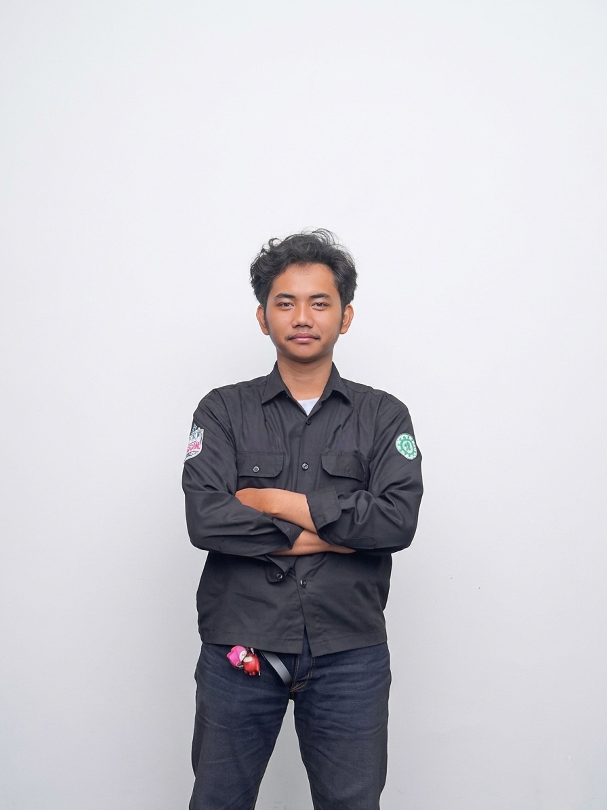
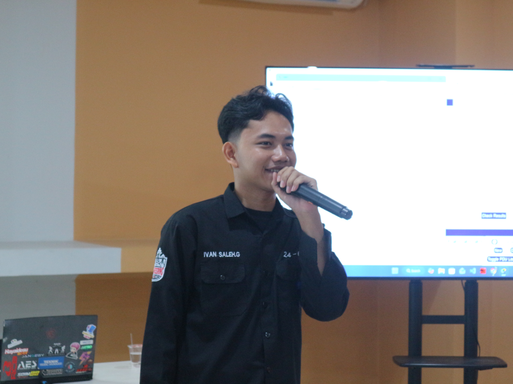

Halo, saya
Ivan Saleh Guswanto
Sangat tertarik di bidang Network Engineer

Latar Pendidikan
Telkom University Jakarta
2024 - SekarangJurusan Teknik Telekomunikasi
Pengalaman & Kepanitiaan
HMTT
Himpunan Mahasiswa Teknik Telekomunikasi
Menjadi Pemateri 2 pada Workshop Perancangan Infrastruktur Jaringan Berbasis Arsitektur, IP Addressing, dan OSPF, dengan memberikan pembahasan mengenai desain infrastruktur jaringan, perencanaan IP Addressing, serta implementasi routing dinamis menggunakan OSPF.


Pengabdian Masyarakat
Implementasi teknologi Ecosave
Terlibat dalam program Ecosave, memberikan edukasi serta mengimplementasikan teknologi Internet of Things (IoT) untuk membantu masyarakat mengelola timbangan sampah dengan lebih modern dan terintegrasi.